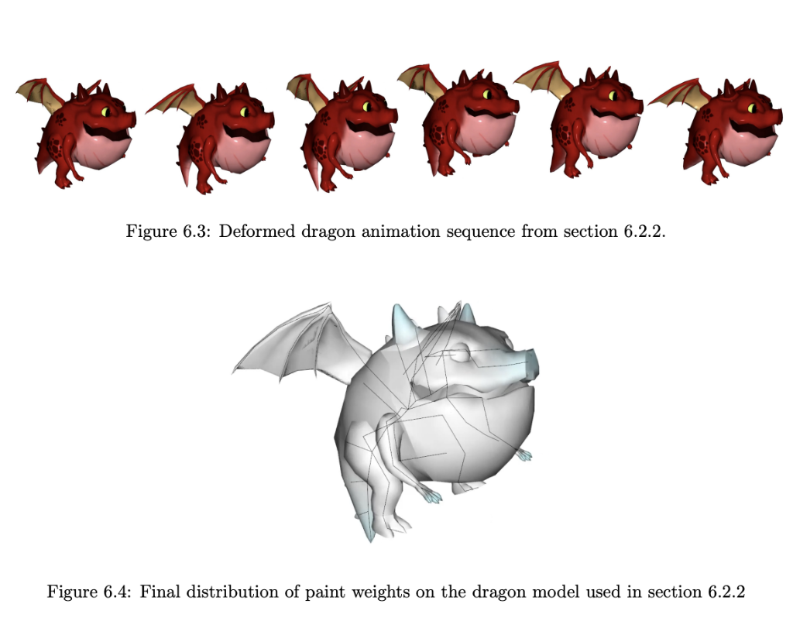

ACADEMIC LEADERSHIP & RESEARCH
Professor of Practice | Virtual Reality & AI Researcher
Bridging Tier-1 studio execution with human-centered scholarly inquiry, real-time graphics architectures, second-person VR narrative theory, and OpenUSD production pipelines.
Pedagogical Philosophy: The Agile Tech-Artist
Addressing technical paralysis in digital production arts through technical resilience, long-term adaptability, and active studio mentorship.
Low-Stakes Technical Resilience
Creative Problem-Solving Under Pressure
I teach students that CG technical artists are non-emergency problem solvers. Technical hurdles—whether an unoptimized shader in Unreal Engine 5, a broken Houdini wrangle, or an unresolved OpenUSD reference layer—are puzzles to be enjoyed rather than sources of stress.
Long-Term Adaptability
Focusing on Timeless Fundamentals
Having navigated major technical shifts over 25+ years—GPU rendering revolutions, digital cinema, virtual production, and now Generative AI—I guide students to bypass tool-specific panic. Software changes continuously, but core storytelling principles remain timeless.
Hands-On Studio Mentorship
Active Daily Lab Guidance
Mastery in digital graphics requires continuous execution. Drawing from my experience directing teams of up to 400 artists, I maintain an active, daily presence in the studio lab, working side-by-side with students on scene optimization and code debugging.
Graduate Mentorship & Thesis Advising Strategy
- Human-Centered Purpose & Emotional Resonance: Grounding research in universal themes of resilience, empathy, and wonder.
- Rigor in High-Stakes Visualizations: Demanding surgical precision for medical imaging, aerospace engineering, and forensic reconstruction.
- Pre-Production Deconstruction & Pipeline Hygiene: Establishing rigid OpenUSD layer hierarchies, standardized folder structures, and relative paths.
- Aligning Technical Innovation with Artistic Core: Justifying the narrative necessity of real-time ray tracing, procedural grooming, or custom scripts.
- Executive Standards & Academic Rigor: Preparing graduate candidates through scholarly writing, code audits, and defense presentations.
Pedagogy in the Era of AI & Automation
- Proactive Integration: Utilizing Generative AI, automated tracking, and neural asset synthesis as efficiency utilities while maintaining complete directorial control.
- Ethical & Moral Dialogue: Analyzing intellectual property, dataset sources, digital ownership, and artistic integrity directly in the classroom.
- Collective & Societal Benefit: Instilling the principle that technology should empower small indie teams to create ambitious works.
Publications & Research
Investigating second-person narrative theory, first-person VR POV, neurophysiological engagement, real-time graphics, and OpenUSD production pipelines.
Virtual Reality Storytelling
MFA Thesis (Clemson University Repository #3599)
"The Second-Person Narrative Mode Used as a Proposed Engagement Form in Virtual Reality Storytelling"
View Thesis on TigerPrints
Acceleration Skinning
Research Contribution (Clemson University Repository #3688)
"Kinematics-Driven Cartoon Effects for Articulated Characters" (Contribution)
View Paper / ThesisFlagship Creative & Technical Projects
I AM YOU
Real-Time Interactive VR Proof-of-Concept (UE5 / Oculus)
Interactive VR experience traveling through distinct dimensions guided by a second-person voice-over acting as internal consciousness across seven emotional and biological stages.
The Second Mind
Sci-Fi Feature Film (In Development - 2026)
Original feature film exploring human identity, ethics, robotics, and AI singularity. Serves as a testbed for AI-assisted pre-visualization, real-time shot creation, and narrative pacing.
VFxM (Virtue FX Manager)
Standalone DAW Utility Tool for REAPER
Developed specifically for REAPER Digital Audio Workstation, VFxM streamlines complex signal routing, spatial audio management, and VST plugin loading for game sound designers.
COMPLETE SYLLABI SUITE
Clemson University FacultyClick any course pill below to inspect key deliverables, software tools, learning outcomes, and topical weekly schedules.
3D Modeling and Animation
Exposes students to current studio practice developing 3D computer graphics and animation for film, games, and visualization. Covers entry-level to intermediate pipelines across modeling, texturing, lighting, rendering, rigging, and character animation.
Key Deliverables & Learning Outcomes:
- Pipeline Flow: Understand basic CG production steps through props and environments.
- Polygon Modeling: Create 3D poly/subdivision models with clean topology for deformation.
- PBR Shading: Apply bitmap textures and generate physically-based materials.
- Character Rigging: Set up animation-ready character/prop rigs; execute walk cycles.
- Final Turntables: Deliver professional-level lighting, rendering, and scene organization matching industry standards.
Topical Course Schedule:
Weeks 1–3: CG production stages, polygonal/subdivision modeling, clean topology.
Weeks 4–7: UV unwrapping, PBR texturing, material assignment, shader networks.
Weeks 8–11: Basic skeleton building, binding/skinning, rigging control setups.
Weeks 12–15: Character walk cycle animation, scene lighting, rendering passes, turntable assembly.
Environment & Assets for Games & Virtual Production
Design and produce a portfolio-ready environment for Unreal Engine 5, demonstrating advanced asset creation, modular workflows, trim sheet texturing, PBR material logic, real-time lighting (Lumen), and professional scene assembly.
Key Deliverables & Learning Outcomes:
- Concept Design: Create an original environment concept sheet establishing scale.
- Modular Kits: Build a production-quality prop set (20–30 assets with 10 modeled individually).
- UE5 Assembly: Construct a full modular environment in Unreal Engine 5.
- Lumen Lighting: Apply professional-level scene lighting, atmospheric fog, and composition.
- Sequencer Fly-Through: Original concept art, prop set, and 30-60s camera fly-through.
Topical Course Schedule:
Weeks 1–3: Pipeline overview, concept design, grey-boxing layouts in UE5.
Weeks 4–7: Modular kit modeling in Maya/ZBrush/Blender, UV unwrapping, trim sheets, PBR.
Weeks 8–11: FBX pipeline import, grid snapping, UE5 Lumen lighting & set dressing.
Weeks 12–15: Post-processing, high-res screenshots, 4K Sequencer camera fly-through presentation.
Visual Effects for Animation & Games (SideFX Houdini)
Hands-on experience with Houdini's procedural workflows to create industry-standard visual effects for film, TV, and games. Focuses on simulation systems, VEX control, technical artistry, and production-ready rendering.
Key Deliverables & Learning Outcomes:
- POPs Particles: Forces, collisions, sprite/mesh instancing, and particle advection.
- MPM Solvers: Simulating continuum mechanics—mud, snow compaction, and sand.
- RBD Dynamics: Voronoi material fracturing, constraint networks, secondary debris, and dust.
- FLIP & Pyro: Liquid splashes, volume sourcing, explosions, and custom VEX wrangles.
- Solaris Karma: USD stage integration, multi-pass AOVs, and final Nuke compositing.
Topical Course Schedule:
Module 1–2: Procedural workflows, SOPs/DOPs, POP particle setups.
Module 3–4: MPM solver dynamics (sand/snow/goo), RBD fracturing & destruction setups.
Module 5–6: FLIP fluid simulation, Pyro smoke/fire volumes, custom VEX wrangles.
Module 7–8: Karma/Mantra rendering, AOV extraction, deep compositing in Nuke, breakdown reel.
Sound for Animation & Games
In-depth, production-oriented exploration of sound design for animation, film, and interactive media. Develops professional workflows for recording, editing, mixing, and implementing sound for linear and real-time pipelines.
Key Deliverables & Learning Outcomes:
- Foley Recording: Design and record sound effects using field recorders and foley stages.
- DAW Audio Editing: Layer, pitch-shift, and process sound in REAPER and Pro Tools.
- Acoustics Theory: Apply frequency, phase, amplitude, and perceptual theory to visual media.
- UE5 Audio Integration: Implement sound in UE5 with attenuation, occlusion, and triggers.
- LUFS Mixing: Produce balanced stereo/spatial mixes meeting broadcast standards.
Topical Course Schedule:
Weeks 1–3: Role of sound in storytelling, film vs. game audio pipelines, acoustics.
Weeks 4–6: Microphone techniques, foley recording, noise management, DAW editing.
Weeks 7–9: Syncing sound to picture, character/environment foley, creative synthesis.
Weeks 10–12: Non-linear game sound, FMOD/UE5 asset organization, distance attenuation.
Weeks 13–15: Mixing, dynamic range control, LUFS mastering, portfolio breakdown presentation.
Advanced Character Rigging
Firsthand experience with contemporary studio practices in 3D character rigging. Covers intermediate and advanced rigging mechanics for production-ready props and bipedal/quadrupedal cartoon characters.
Key Deliverables & Learning Outcomes:
- Joint Layout: Strategic joint layout based on anatomical pivot points.
- Control Systems: IK/FK switch systems with seamless blending and pole vectors.
- Reverse Foot: Custom roll, pivot banking, and finger curl channel attributes.
- Facial Rigging: Auto-orientation, blendshape networks, joint facial controls, and skinning.
Topical Course Schedule:
Weeks 1–3: Joint placement, skeletal hierarchy, spine IK/FK switch setups.
Weeks 4–7: Biped arm and leg rigging, pole vector constraints, stretch mechanics.
Weeks 8–11: Reverse foot rigging, custom attributes, hand and finger curling controls.
Weeks 12–15: Facial blendshape networks, joint-based facial deformation, skin weight painting.
Character Effects for Films (CFX)
Creates production-ready character effects including dynamic cloth, hair/fur grooms, and secondary simulations in Maya and Houdini, emphasizing believable movement integrated into film/VFX pipelines.
Key Deliverables & Learning Outcomes:
- Cloth Simulation: nCloth and Vellum setups, garment patterns, collision layers, and caching.
- Procedural Grooming: XGen and Houdini Solaris grooming for realistic hair and fur.
- Secondary Dynamics: Soft-body flesh jiggle, skin sliding, capes, belts, and jewelry.
- USD Cache Hand-offs: Alembic/USD cache hand-offs, topology wrapping, and rendering.
Topical Course Schedule:
Module 1–3: CFX overview, Maya Nucleus system, nCloth garment patterns & constraints.
Module 4–6: Houdini Vellum cloth, groom guide curves, XGen hair setups, shading.
Module 7–9: Soft-body flesh dynamics, secondary accessory simulation, interaction logic.
Module 10–11: Karma/Arnold heavy-scene rendering, shot cleanup, cache baking, turntables.
Visual Effects Compositing
Explores visual effects compositing in Nuke, focusing on integrating 3D CG renders, matte paintings, and live-action footage using industry-standard node-based workflows.
Key Deliverables & Learning Outcomes:
- Keying & Roto: Green/blue screen extraction (Keylight/Ultimatte) and animated rotoscoping.
- 3D Matchmoving: 2D tracking, Mocha planar tracking, and 3D camera tracking for set extensions.
- Multi-Pass AOVs: AOV rebuilding (Diffuse, Specular, AO, Depth) in ACES color space.
- 2.5D Projections: Nuke 3D projection cards, atmospheric particle FX, and camera projection.
Topical Course Schedule:
Weeks 1–4: Node-based interface, footage ingest, linear workflow, green screen keying.
Weeks 5–8: 2D/3D camera tracking, Mocha planar tracking, multi-pass CG render recombination.
Weeks 9–12: 2.5D set extensions, projection cards, atmospheric particle effects, lens distortion.
Weeks 13–15: Final shot delivery, ACES color management, breakdown reel formatting.
Visual Programming for Games (UE5 Blueprints)
Introduces game prototyping and visual programming using Unreal Engine 5 Blueprint technology, simulating rapid industry game development practices.
Key Deliverables & Learning Outcomes:
- Blueprint Logic: Event graphs, functions, macros, variable types, and execution flow.
- Player Systems: Character controllers, pawns, enhanced input mapping, and camera systems.
- Game Logic & UI: Triggers, overlaps, raycasting, health systems, and UMG menus.
- AI Behavior Trees: NavMesh navigation, Blackboard variables, AI perception, and state machines.
Topical Course Schedule:
Weeks 1–4: UE5 interface, Blueprint nodes, variables, functions, player input mapping.
Weeks 5–8: Object communication, event dispatchers, line traces, health logic, UMG widgets.
Weeks 9–12: Overlaps, collision responses, AI NavMesh, Blackboard behavior trees, sound FX.
Weeks 13–15: Game loop assembly, optimization, packaging, and final gameplay breakdown.
Advanced 3D Modeling & Sculpting
Exposes students to current studio practices developing 3D computer graphics regarding 3D modeling and sculpting. Emphasizes character concept development and production-ready modeling workflows.
Key Deliverables & Learning Outcomes:
- High-Poly Clay: Primary forms, secondary shapes, and fine skin/fabric tertiary detailing.
- Quad Retopology: Re-topologize sculpts into animation-ready meshes with clean quad flow.
- Subtool Layers: Manage complex multi-mesh assets, Dynamesh, SubD levels, and morph targets.
- UDIM Baking: Produce hero asset turntables, wireframe overlays, UDIM UVs, and PBR maps.
Topical Course Schedule:
Weeks 1–4: Concept sheet analysis, blocking primary proportions, ZBrush clay sculpting.
Weeks 5–8: Mid/tertiary detailing, subtool organization, cloth/accessory sculpting.
Weeks 9–12: Retopology for deformation, edge flow for joints/facial areas, UDIM unwrapping.
Weeks 13–15: PBR texturing, beauty lighting, clay/wireframe renders, final turntable package.
Student Theses (Committee Member)
Advising and serving on graduate thesis committees for MFA and MS candidates in Digital Production Arts at Clemson University.
Gabrielle Marie DeLo
MFA Thesis (In Progress)
"Creating a Working Model of a Dark Ride in Unreal Engine 5.5"
View PortfolioAlison R Gaddy
MFA Thesis (2026)
"Between Chronicle and Legend: A Two-Scene Environment and Visual Effects Examination of Physical Accuracy and Emotional Exaggeration on the Honey Creek Bridge Collapse"
View ThesisAbhijit Varanasi
MFA Thesis (2025)
"Enhancing Facial Expressiveness for Games Through Procedural Animation"
View ThesisTyler Kidd
MFA Thesis (2025)
"An Exploration of Elderly Representation & Stereotypes in Animation"
View ThesisAtharva Tilwankar
MFA Thesis (2025)
"Unspoken Bonds"
View ThesisJehoshaphat Chacko
MFA Thesis (2024)
"The Star Caller: Shining a Light on Game Production and Real Time Cinematics"
View ThesisSamuel Hagen
MFA Thesis (2024)
"Environmental Storytelling in Video Games Through the Lens of Film Noir"
View ThesisKarim Hudson
MFA Thesis (2024)
"Animating Reality: Enhancing Immersion through Secondary Animation Rigging Techniques in Video Games"
View ThesisEric DiNicolantonio
MFA Thesis (2023)
"Using Visual Effects as a Means of Establishing or Reinforcing Scale in 3D Visual Works"
View ThesisGriffin Poyck
MFA Thesis (2023)
"Procedural City Generation with Combined Architectures for Real-time Visualization"
View ThesisMohammad Saffar
MFA Thesis (2023)
"An Investigation of How Lighting and Rendering Technology Affects Filmmaking Relative to Arnold's Transition to a GPU-Based Path-Tracer"
View ThesisKara Porter
MFA Thesis (2022)
"Transforming Character Faces based on Perceived Personality Traits"
View ThesisInterdisciplinary Research & Lab Collaborations
Pioneering applied virtual reality systems, historical marine reconstructions, and kinematics-driven rigging with distinguished research faculty and industry leaders.
Virtual Reality Training Systems
Collaborator: Dr. Larry Hodges (VR Pioneer) & KEMET Corp
Participated in applied virtual reality research developing interactive VR training environments designed to simulate high-stakes industrial manufacturing plants. Allowed personnel to be trained safely without physical hazards, improving retention and lowering operational risks.
SS Edmund Fitzgerald 3D Asset
Collaborator: Dr. Jerry Tessendorf & Thomas Lynskey
Collaborated with Dr. Jerry Tessendorf at Clemson University to refine the 3D modeling and texturing of the SS Edmund Fitzgerald with rigorous historical accuracy. The asset served as the core model featured in Thomas Lynskey's 50th-anniversary documentary.
Acceleration Skinning
Kinematics-Driven Character Rigging
Contributed to advanced character rigging research supervising character rigging and technical setup for "Acceleration Skinning: Kinematics-Driven Cartoon Effects for Articulated Characters". Extended velocity skinning to incorporate skeletal acceleration for procedural followthrough.